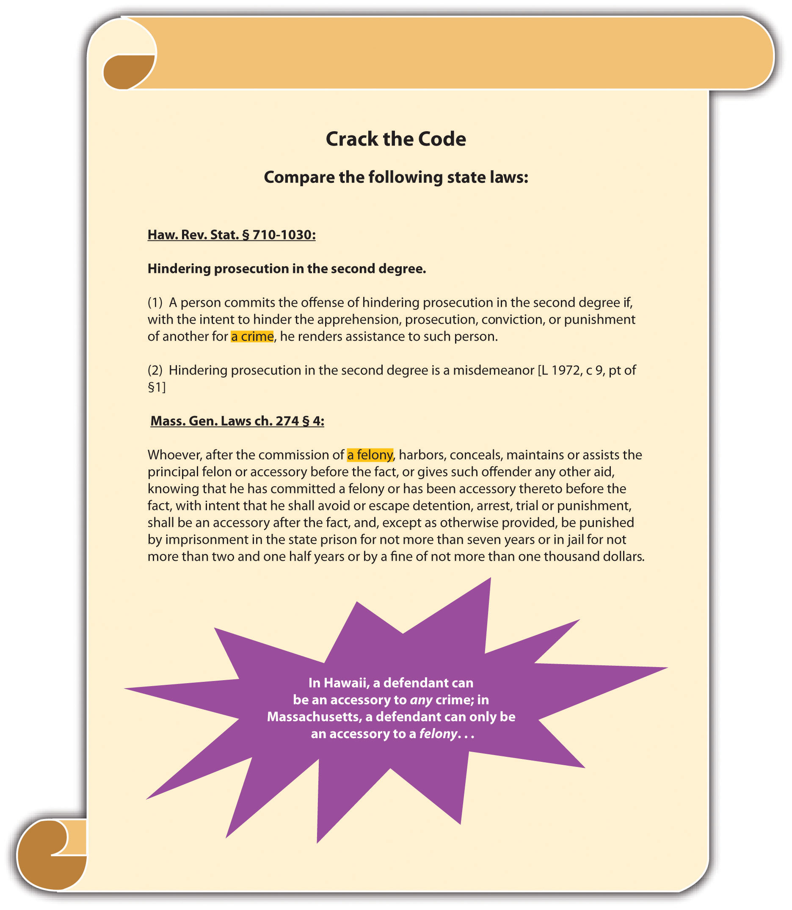
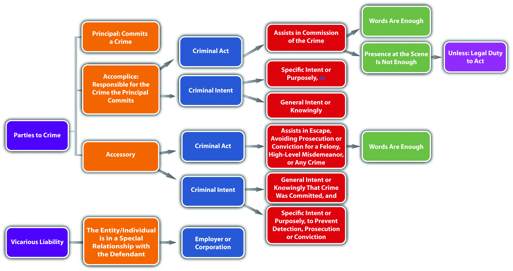

As stated in Section 7.1.1 "Accomplice Liability", at early common law, a defendant who helped plan the offense but was not present at the scene when the principal committed the crime was an accessory before the fact. A defendant who helped the principal avoid detection after the principal committed the crime was an accessory after the fact. In modern times, an accessory before the fact is an accomplice, and an accessory after the fact is an accessoryA defendant who helps a principal escape or avoid arrest, prosecution for, or conviction of a crime., which is a separate and distinct offense. Some states still call the crime of accessory “accessory after the fact”Mass. Gen. Laws ch. 274 § 4, accessed January 16, 2011, http://law.onecle.com/massachusetts/274/4.html. or “hindering prosecution.”Haw. Rev. Stat. § 710-1030, accessed January 26, 2011, http://law.justia.com/codes/hawaii/2009/volume-14/title-37/chapter-710/hrs-0710-1030-htm/.
The difference between an accomplice and an accessory is crucial. An accomplice is responsible for the offense the principal commits. An accessory, on the other hand, is guilty of a separate crime that is almost always a misdemeanor.
The criminal act element required for an accessory in the majority of jurisdictions is aiding or assisting a principal in escape, concealment, or evasion of arrest and prosecution or conviction after the principal commits a felony.Va. Code Ann. § 18.2-19, accessed December 26, 2010, http://law.onecle.com/virginia/crimes-and-offenses-generally/18.2-19.html. In most states, a defendant cannot be an accessory to a misdemeanor, although in some states a defendant can be an accessory to a high-level or gross misdemeanor.N.R.S. § 195.030, accessed December 26, 2010, http://law.onecle.com/nevada/crimes/195.030.html. In a minority of states, the defendant can be an accessory to any crime.Haw. Rev. Stat. § 710-1030, accessed October 10, 2011, http://www.capitol.hawaii.gov/hrscurrent/Vol14_Ch0701-0853/HRS0710/HRS_0710-1030.htm.
In many states, words are enough to constitute the accessory criminal act element.Minn. Stat. Ann. § 609.495, accessed December 23, 2010, https://www.revisor.mn.gov/statutes/?id=609.495&year=2010. Often special categories of individuals are exempted from liability as an accessory, typically family members by blood or marriage.Vt. Stat. Ann. tit. 13 § 5, accessed December 23, 2010, http://www.leg.state.vt.us/statutes/fullchapter.cfm?Title=13&Chapter=001.
Jim wakes up late at night to the sound of someone pounding on his door. He gets out of bed, walks down the stairs, and opens the door. His father James is on the doorstep. James’s eyes are bloodshot and he is swaying slightly on his feet. He tells Jim that he just got into a car accident and needs to come inside before the police find out about it and begin an investigation. Jim steps aside and lets his father enter the house. The smell of alcohol on his father’s breath is apparent. He thereafter allows his father to spend the night without contacting the police about the accident.
Jim has probably committed the criminal act element required for an accessory in many jurisdictions. Jim allowed his father to escape arrest and evade an alcohol screening after leaving the scene of a car accident, which is most likely felony drunk driving and hit and run. He also sheltered his father for the night, concealing him from law enforcement. If Jim is in a state that exempts family members from accessory liability, he may not be subject to prosecution because the principal to the crime(s) is his father. If Jim is not in a state that relieves family members from accessory liability, he could be fully prosecuted for and convicted of this offense.
Figure 7.3 Crack the Code
The criminal intent element required for an accessory has two parts. First, the defendant must act with general intent or knowingly or awareness that the principal committed a crime. Second, the defendant must help or assist the principal escape or evade arrest or prosecution for and conviction of the offense with specific intent or purposely.Mass. Gen. Laws ch. 274 § 4, accessed December 26, 2010, http://law.onecle.com/massachusetts/274/4.html.
Review the example with Jim and James given in Section 7 "Example of Accessory Act". In this case, Jim is aware that James committed a crime because James told Jim he got into an accident and James’s intoxicated condition was apparent. Nonetheless, Jim purposely helped James evade arrest and an alcohol screening by sheltering him in his home while the effects of the alcohol dissipated. Thus Jim probably has the criminal intent required for liability as an accessory in most jurisdictions. If Jim is not in a state that exempts family members from accessory liability, he could be fully subject to prosecution for and conviction of this offense.
As stated in Section 7.3 "Accessory", in many jurisdictions accessory is an offense that is graded less severely than the crime committed by the principal. Accessory is typically graded as a misdemeanor,Haw. Rev. Stat. § 710-1030, accessed January 9, 2011, http://law.justia.com/codes/hawaii/2009/volume-14/title-37/chapter-710/hrs-0710-1030-htm/. although in some jurisdictions it is graded as a felony.Idaho Code Ann. § 18-206, accessed January 9, 2011, http://www.legislature.idaho.gov/idstat/Title18/T18CH2SECT18-206.htm.
Table 7.1 Comparison of Accomplice, Accessory, and Vicarious Liability
| Type of Liability | Criminal Act | Criminal Intent |
|---|---|---|
| Accomplice | Aid, assist commission of a crime | Specific or purposely, or general or knowingly, depending on the jurisdiction |
| Accessory | Aid, assist evasion of prosecution or conviction for a felony, high-level misdemeanor, or any crime | General or knowingly (crime committed) plus specific or purposely (principal evades prosecution or conviction) |
| Vicarious | Committed by an individual in a special relationship with the defendant | Belongs to an individual in a special relationship with the defendant |
Figure 7.4 Diagram of Parties to Crime
The criminal intent element required for an accessory has two parts. The defendant must act
Answer the following questions. Check your answers using the answer key at the end of the chapter.